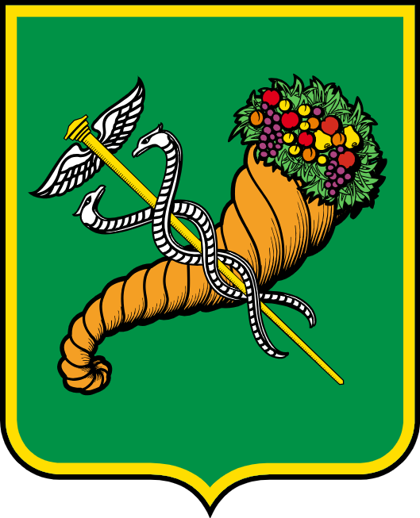
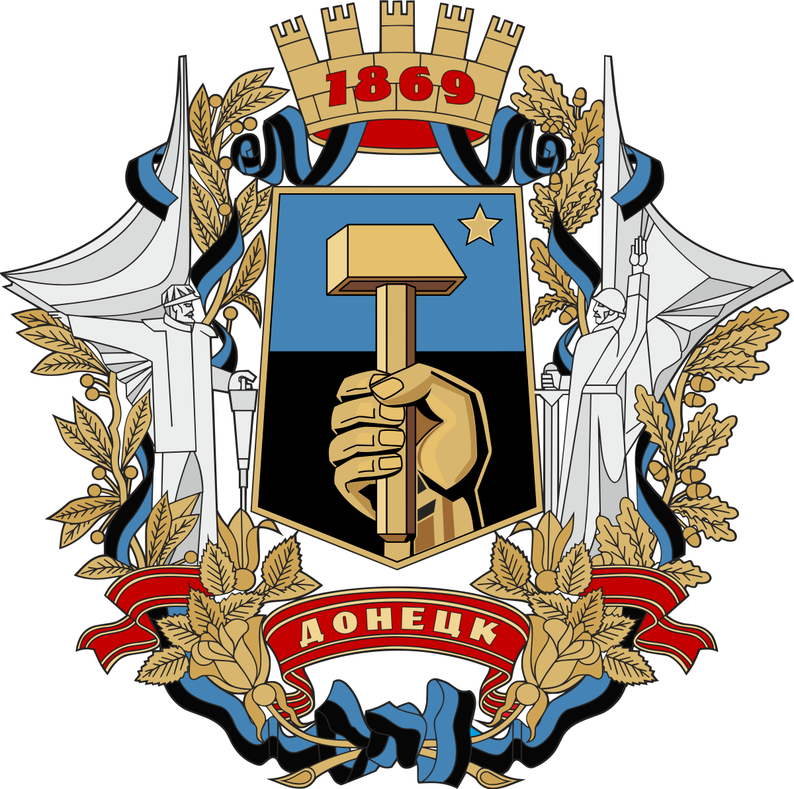
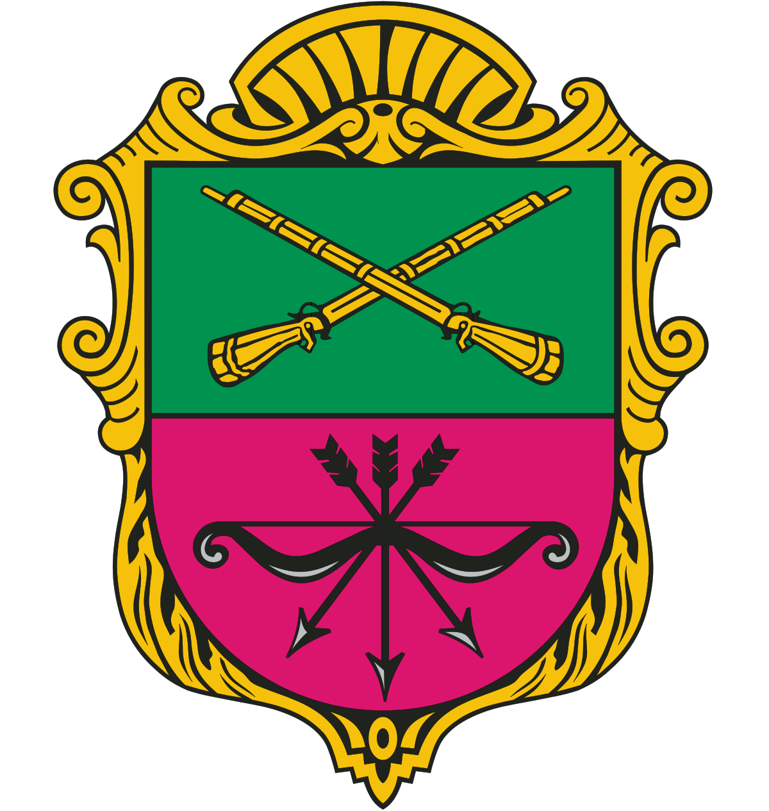
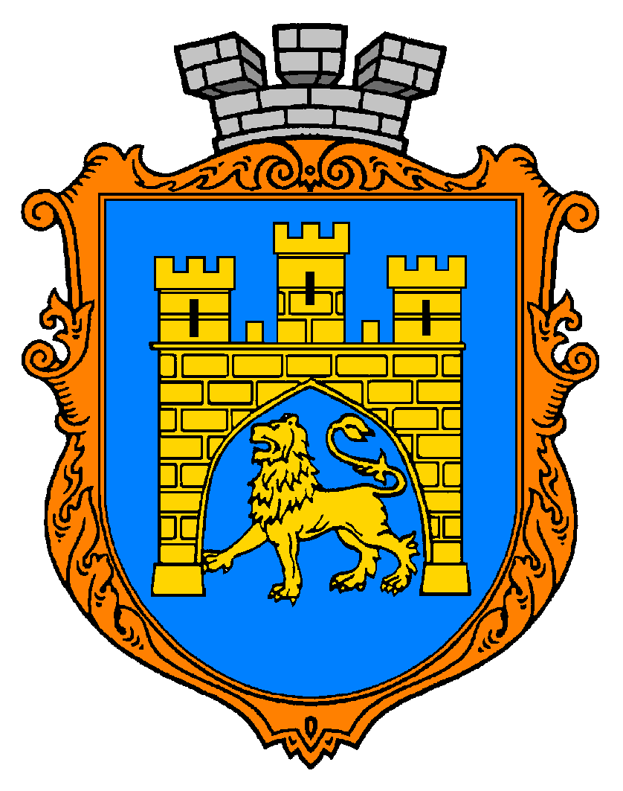

Стаття про міста України
Краса українських міст Українські міста приваблюють своєю різноманітністю архітектури, багатством культурного та історичного спадку, а також живописними природними ландшафтами. Вони є не лише центрами економічного розвитку, але й місцями, де зберігаються традиції, мистецтво та дух нації. Великий вибір музеїв, театрів, ресторанів, парків і розваг робить українські міста привабливими для життя, подорожей та відпочинку. Вони представляють собою унікальну суміш історії, сучасності та гостинності, яка робить їх привабливими для відвідувачів з усього світу.
місто Київ

Київ - столиця України та найбільше місто країни за кількістю населення.
Місто має довгу історію, що відображена у багатьох пам'ятках архітектури, зокрема в Успенському Соборі та Печерській Лаврі.
місто Харків
Харків - це культурний центр України, відомий своїми театрами, музеями та художніми галереями.
Місто славиться своїми парками та скверами, зокрема Горького парком, який є одним з найбільших у Європі.
місто Одеса

Одеса - великий морський порт на півдні України, відомий своєю архітектурою у стилі класицизму та бароко.
Місто має довге узбережжя та широкі пляжі, що робить його популярним курортом для відпочинку багатьох туристів.
місто Дніпро

Дніпро - велике промислове місто, розташоване на берегах річки Дніпро.
Місто славиться своєю прекрасною набережною, яка є популярним місцем для прогулянок та відпочинку мешканців та гостей.
місто Донецьк
Донецьк - це місто, яке розташоване на сході України, відоме своїм видобутком вугілля та важкою промисловістю.
Місто також має багато парків та скверів, де мешканці та гості можуть насолоджуватися природою.
місто Запоріжжя
Запоріжжя - це велике промислове місто, розташоване на берегах річки Дніпро. Воно є одним з найбільших промислових центрів України, спеціалізується на металургії, машинобудуванні та енергетиці.
Місто також славиться своєю культурною спадщиною, до якої входять різноманітні музеї, театри та художні галереї. Відвідувачі можуть насолоджуватися красою набережної річки Дніпро та прогулянками в міських парках.
місто Львів
Львів - це місто з багатою історією та культурним спадком. Відомий своєю архітектурою у стилі бароко, ренесансу та готики, Львів вважається одним з найкрасивіших міст України.
Місто славиться своєю кавовою культурою, чудовими кав'ярнями та вуличними кафе. Також в Львові розташовані численні музеї, театри та художні галереї, що робить його важливим центром культурного життя України. Багато вуличних фестивалів та подій приваблюють туристів з усього світу, щоб насолодитися атмосферою цього чарівного міста.